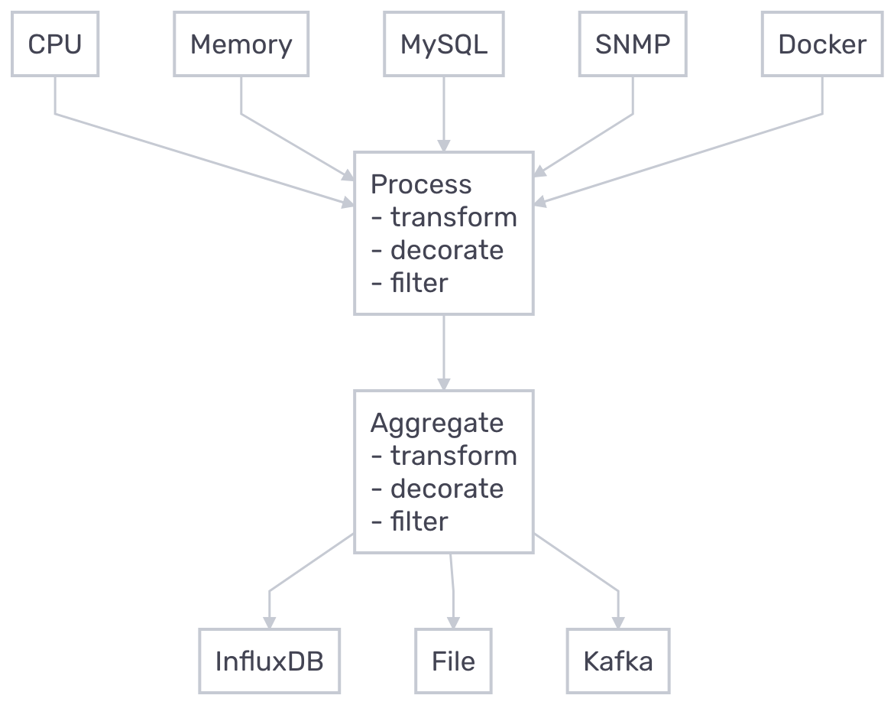

Gotta Collect 'Em All
Metrics Easily Visualised
Who am I?
- Student at Graz University of Technology üéì
- System Analyst at BearingPoint üåø
- Linux experience of about 6 years üíª
- Previously HW/SW-Developer and SysAdmin üå±
- Likes to play Basketball üèÄ
How I got into my sports courses?
What happened after?
Why even collect metrics?

Provide system health overview
- View uptime and status
- Explore usage stats (CPU, RAM, Disk I/O etc.)
- Examine Package update status
- Verify network health
Avoid disasters
- Monitor critical processes and jobs
- View disk usage
- Check backup status

Prevent disk failure
- Observe S.M.A.R.T results
- Track temperatures
Collect IoT data
- Gather IoT sensor readings
- Probe webserver status

What is Telegraf?
- Free Open Source Software
- Metrics Agent
- Written in Go
- Plugin-driven
Why would you want to use it?
- Single binary
- Minimal memory footprint
- High flexibility
- Straightforward setup
How can it be deployed?
- Binary
- Ansible role
- Docker container
- Kubernetes deployment
Let’s see some examples!
Basic Configuration
telegraf --input-filter cpu --output-filter influxdb config

Plugin Configuration
Input Plugins
- Sensors (lm_sensors)
- S.M.A.R.T.
- HTTP response
- X.509 Certificate
- Wireguard
- Minecraft scoreboard
- YouTube
Example Input Plugins
Even More Input Plugins
- Octoprint API
- OpenWeatherMap
- PostgreSQL/MySQL queries
- Proxmox API
- MQTT Consumer
- Octoprint API
- CS:GO server statistics
- many more …
Aggregator and Processor Plugins
Output Plugins
- InfluxDB
- Exec
- File
- Prometheus
- MQTT Producer
Docker Compose Setup

Docker Images
docker pull telegraf
docker pull telegraf:1.18
docker pull telegraf:1.18-alpine
Docker Container Monitoring
Docker Input Plugin
Dashboard Search
Docker Dashboard
Environment Variables

Linux System Monitoring
System Input Plugins

Host Overview Dashboard

More dashboards
Simulating top

Mentioned resources
- Telegraf - GitHub repository
- Telegraf - Downloads page
- Telegraf - Plugin overview
- InfluxDB and Telegraf integrations
- TIG stack on Raspberry Pi
- TIG stack with Docker Compose
Mentioned resources
Attributions
- Metrics - Photo by Luke Chesser on Unsplash
- Hard disk - Photo by Denny Müller on Unsplash
- Container ship - Photo from VesselFinder
- IoT device - Espressif ESP32 Development Board - Developer Edition by adafruit is licensed under CC BY-NC-SA 2.0
Attributions
- reveal.js - HTML presentation framwork
- carbon-now - Source code images
Thanks!
curl -sL https://matthias.thym.at/card
https://blog.thym.at/p/glt21/